Aktuálna ponuka
Nehnuteľnosti, ktoré ponúkam
11 nehnuteľností na predaj a prenájom. Vyberte typ, alebo napíšte lokalitu.
11 z 11 ponúk
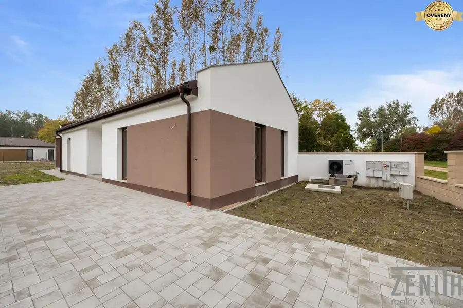
Rodinné domy10 237 000 €Na predaj dom – Dunasziget, Maďarsko Dunasziget 4-izbový90.4 m² Ponúkame na predaj novopostavený rodinný dom v obci Dunasziget, časť Cikolasziget, iba 40 km od Bratislavy. Dom sa nachádza v pokojnej lokalite…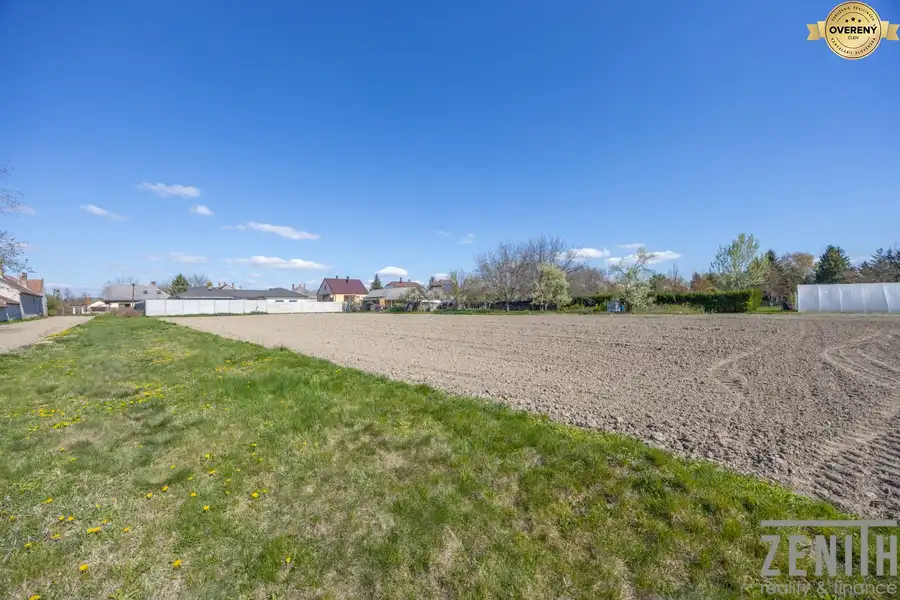
Pozemok6 64 900 €Priestranný stavebný pozemok – Dunakiliti, Maďarsko Mosonmagyaróvár, Dunakiliti 914 m² Ponúkame na predaj stavebný pozemok s výmerou 914 m² v príjemnej a pokojnej časti obce Dunakiliti v Maďarsku. Vďaka rýchlej dostupnosti do…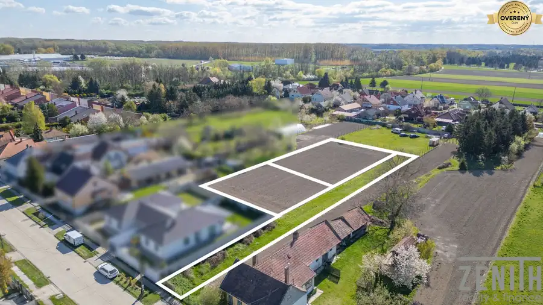
Pozemok5 64 900 €Stavebný pozemok – Dunakiliti, Maďarsko Mosonmagyaróvár, Dunakiliti 909 m² Ponúkame na predaj priestranný stavebný pozemok s výmerou 909 m² v pokojnej a obľúbenej obci Dunakiliti v Maďarsku, vzdialenej približne 20–25 minút…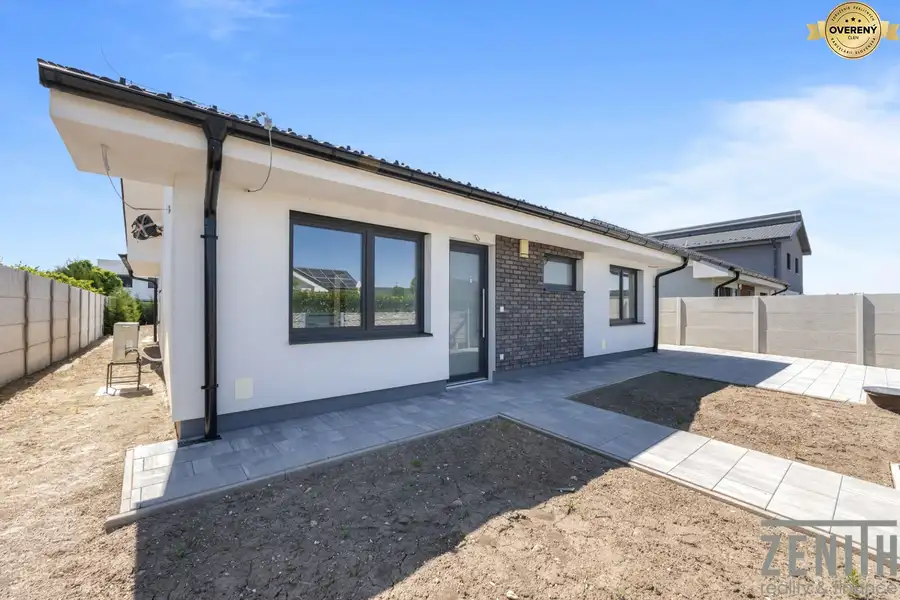
Rodinné domy10 429 900 €4-izbový dom s veľkou terasou a pozemkom 681 m² | Alžbetin Dvor Alžbetin Dvor, Miloslavov 4-izbový109.18 m² Dom ponúka úžitkovú plochu 109,18 m², veľkú terasu s výmerou 30,82 m² a pozemok s celkovou výmerou 681 m². Zaujme predovšetkým priestrannou a svetlou…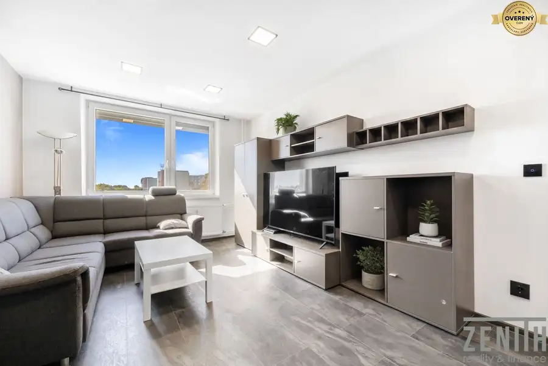
Byt10 185 000 €Kompletne zrekonštruovaný 2-izbový byt s pivnicou | Čiližská - Vrakuňa Vrakuňa, Bratislava 2-izbový42.13 m²4. podlažie Moderný, kompletne zrekonštruovaný byt na Čiližskej ulici ponúka praktické 2-izbové bývanie s oddelenou spálňou, priestrannou obývacou izbou, novou…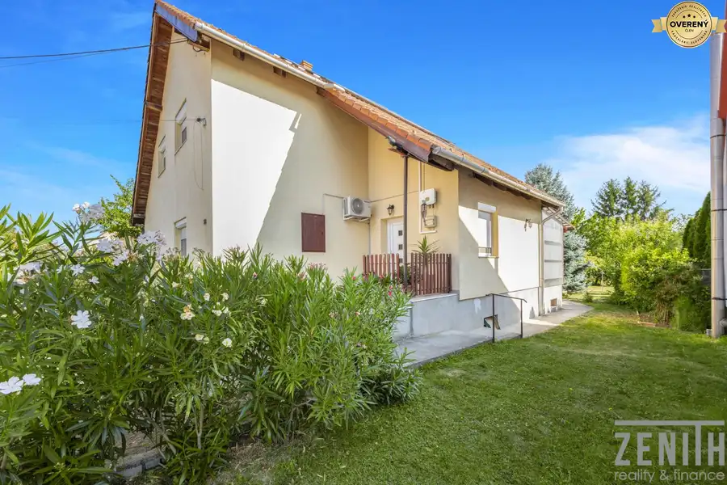
Rodinné domy10 305 000 €7-izbový dom so solárnymi panelmi, garážou a pozemkom 839m2/ Rajka Rajka 7-izbový168 m² Ponúkame na predaj priestranný dvojpodlažný rodinný dom situovaný hneď na začiatku obce Rajka, v pokojnej ulici s dobrou dostupnosťou smerom do…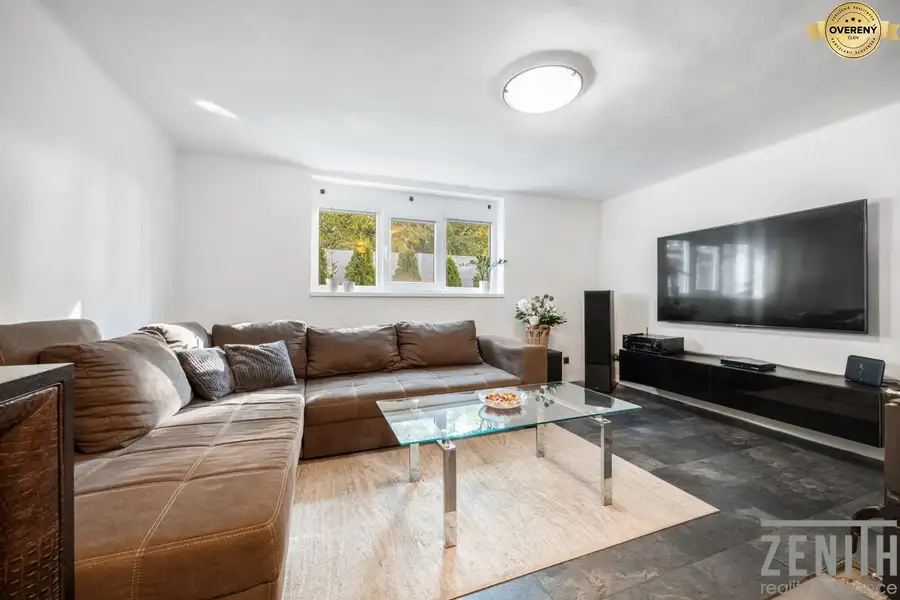
Chaty a chalupyRezervované10 144 900 €Chata s možnosťou celoročného bývania – Vampil Plavecký Štvrtok 3-izbový79 m² Ponúkame na predaj rekreačnú chatu s možnosťou celoročného bývania, nachádzajúcu sa v tichej a vyhľadávanej lokalite Vampil – Plavecký Štvrtok, mimo…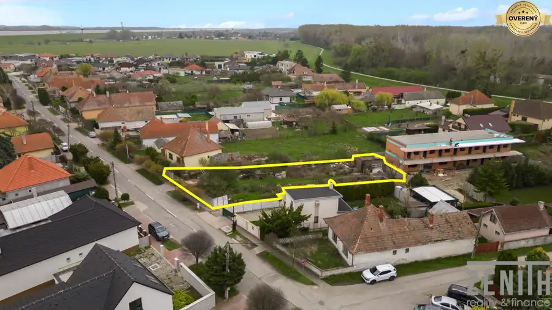
PozemokPredané7 PredanéPozemok - Dobrohošť Dobrohošť 871 m² Ponúkame vám na predaj rovinatý pozemok s výmerou 871 m², ideálny pre výstavbu rodinného domu. Pozemok sa nachádza v tichej, zastavanej časti obce,…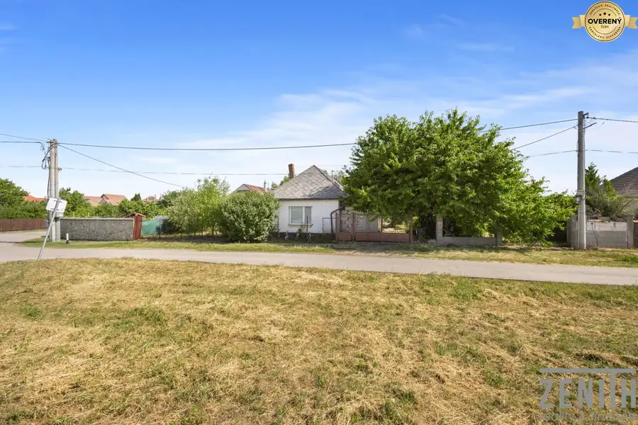
PozemokPredané9 PredanéVeľký stavebný pozemok 1786m2 so starším rodinným domom Dobrohošť 1786 m² Predávame veľký stavebný pozemok 1786m2 so starším rodinným domom, vhodným na prerobenie alebo výstavbu moderného domu, prípadne aj dvoch rodinných…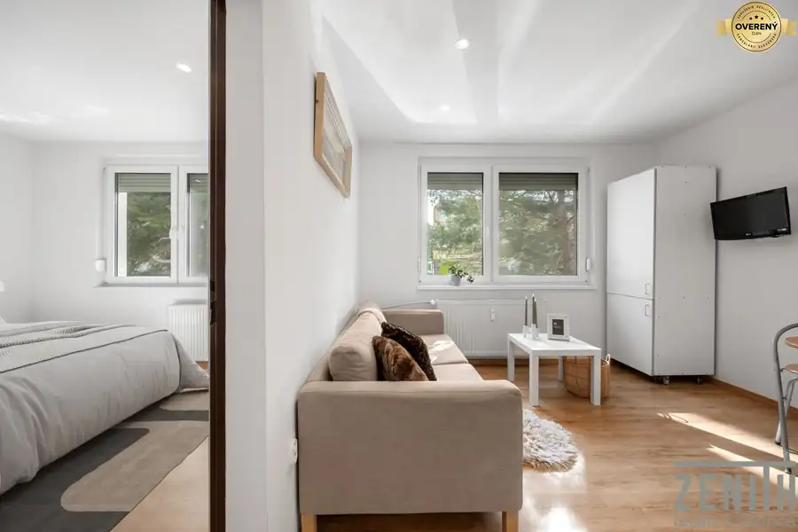
BytPredané10 Predané1-izbového bytu po rekonštrukcii – Vilová ulica, Bratislav Petržalka, Bratislava 1-izbový36 m²1. podlažie REZERVOVANÝ - svetlý a priestranný 1-izbový byt s výmerou 36 m², situovaný na vyhľadávanej Vilovej ulici v Bratislave – Petržalke. Byt sa nachádza na…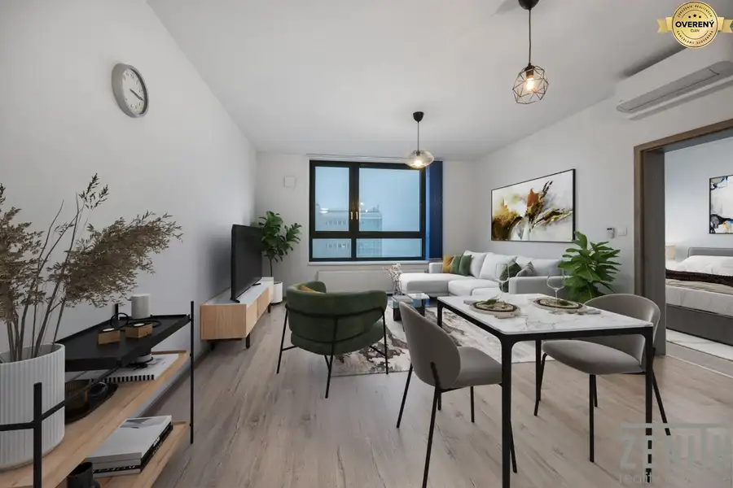
BytPredané10 Predané2-izbový byt – novostavba Jarabinky, Ružinov Ružinov, Bratislava 2-izbový7. podlažie Na predaj ponúkame moderný 2-izbový byt v novostavbe v jednom z najvyhľadávanejších rezidenčných projektov Jarabinky na Jarabinkovej ulici v mestskej…Tomuto výberu zatiaľ nezodpovedá žiadna ponuka. Napíšte mi, čo hľadáte.